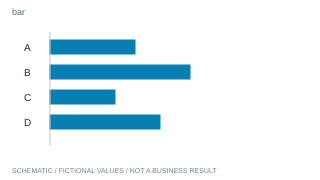
가로 막대横棒グラフ
항목 크기와 긴 이름을 함께 비교
단위·0 기준 확인
11개 유형군 · 72개 패턴 · 19개 공식 출처 / 독자와 자료에 맞는 표현을 선택하기 위한 구도 샘플입니다.
모든 구도와 수치는 가상 예시입니다. 실제 보고서에서는 검증한 내용으로 새로 구성합니다. 외부 사진·화면·원문 코드를 복사하지 않았습니다. この一覧は構図の参考です。図と数値は実績ではありません。

항목 크기와 긴 이름을 함께 비교
단위·0 기준 확인
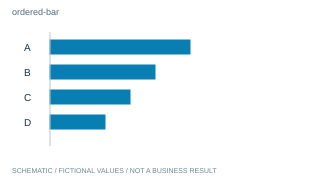
순위와 격차를 한눈에
정렬이 논점에 맞아야 함
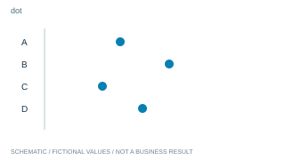
간결한 축 위에서 값 비교
점의 의미와 축 설명
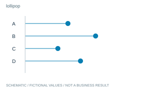
항목별 값의 끝점 강조
막대보다 나을 이유 확인
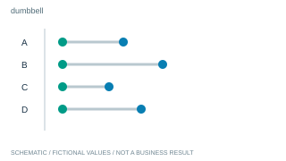
항목별 두 상태 차이
같은 항목의 짝과 단위
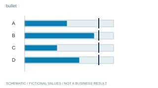
실적과 목표의 거리
목표를 승인 실적으로 오인 금지
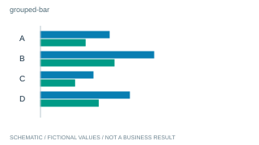
소수 그룹의 항목별 차이
범례·그룹 수 관리
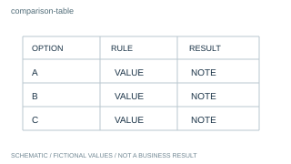
정확한 조건과 값 비교
모든 대안에 같은 기준
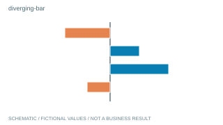
기준 대비 증가와 감소
기준과 부호를 명시
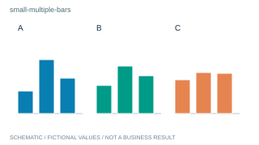
항목이 많은 그룹 비교
축 범위와 순서 통일
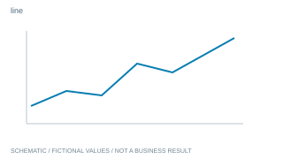
시간에 따른 방향
누락 기간을 임의 연결 금지
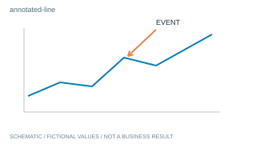
변화와 관련 사건의 위치
사건만으로 인과 단정 금지
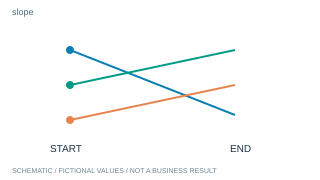
두 시점의 이동
중간 추세는 알 수 없음
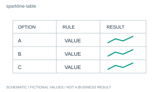
정확한 값과 작은 추세
축 차이를 숨기지 않음
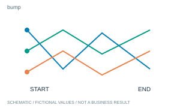
시간별 순위 교체
값 크기와 순위 구분
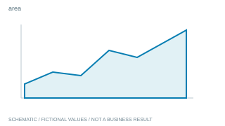
누적 규모의 흐름
면적과 0 기준 점검
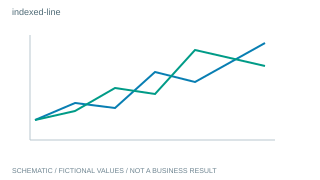
시작 규모가 다른 추세
기준 시점과 계산식 표시
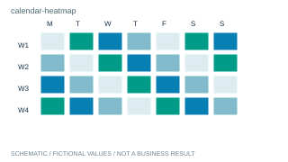
요일·기간 패턴
색 범례와 결측 표시
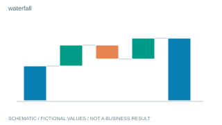
시작과 끝 사이의 증감
중간 합계와 산식 일치
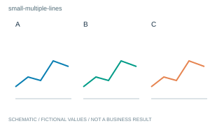
겹친 선을 나눠 비교
공통 축과 예외 표시
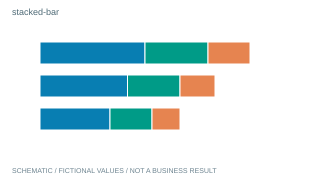
전체와 구성 규모
공통 합계와 항목 정의
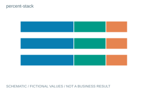
집단별 구성비
절대 규모는 별도 표시
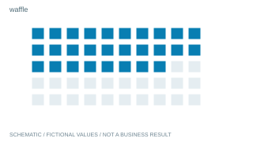
부분과 전체를 작은 단위로
반올림과 분모 설명
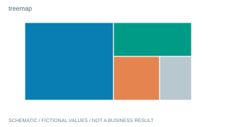
큰 계층의 구성
면적의 정밀 비교는 어려움
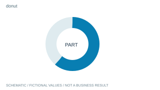
소수 구성의 한 비중
작은 차이는 막대로 대체
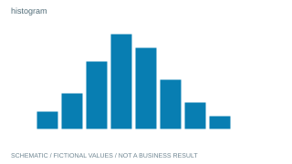
측정값이 몰린 범위
구간 폭에 따라 모양 변화
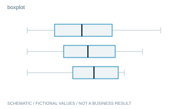
그룹별 중앙·산포
표본 수와 요약 정의
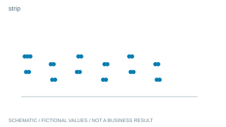
작은 표본의 실제 관측
중복 점 가림 관리
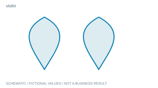
그룹의 분포 형태
자료 부족 시 밀도 오해
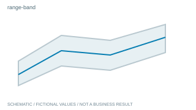
추정 범위와 중심
범위가 무엇인지 명시
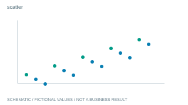
두 측정 변수의 관계
상관과 인과 구분
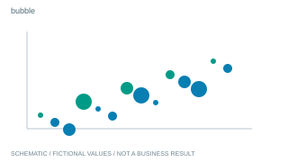
관계에 추가 규모
반지름 대신 면적과 범례
많은 조합의 패턴
색만으로 정확한 값 대체 금지
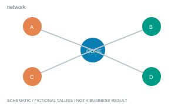
실제 연결과 중심
연결 없는 노드 연결 금지
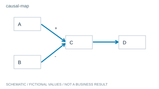
검증된 작동 관계
가설은 가설로 표시
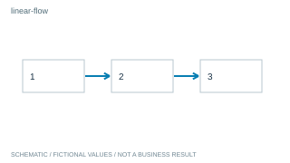
순서와 완료 지점
실제 순서 확인
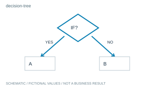
상황별 다음 행동
분기 조건과 종료점
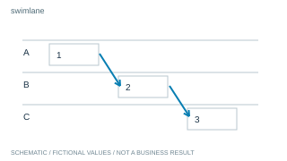
담당과 인계
소유자와 순서를 함께 확인
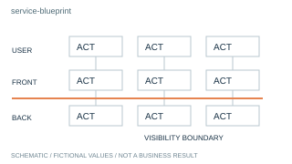
고객 경험과 내부 지원
실제 접점과 제안 구분
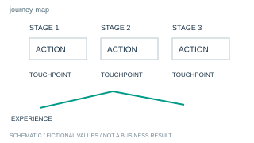
사용자가 겪는 과정
감정·문제의 근거 표시
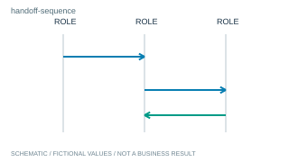
역할 사이의 전달 시점
화살표의 주체와 대상
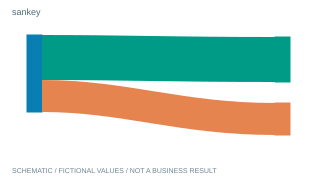
규모가 이동하는 경로
보존량과 누락 흐름 확인
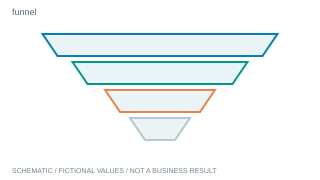
동일 집단의 단계별 감소
서로 다른 모집단 혼합 금지
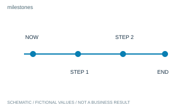
중요 일정과 결정
확정과 예정 구분
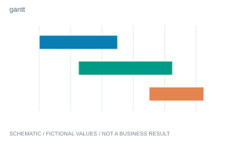
작업 기간과 중첩
달력 간격·의존 조건
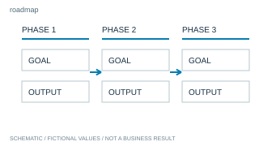
방향과 단계별 성과
기간 없는 단계에 날짜 창작 금지
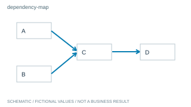
먼저 완료해야 할 일
화살표를 시간 비례로 오인 금지
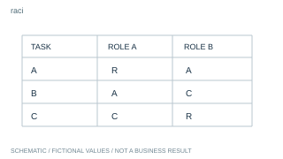
업무별 결정·수행 역할
역할 정의와 승인 상태
기간별 자원 부담
수용량과 수요를 구분
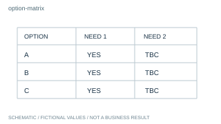
같은 기준으로 선택
근거 없는 점수 창작 금지
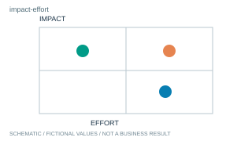
정성적 우선순위
축 정의와 배치 근거
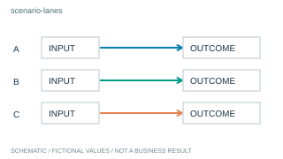
조건별 전개 차이
실적과 가정 구분
얻는 것과 필요한 조건
불리한 조건을 숨기지 않음
위험 분류와 대응
색이나 위치를 확률로 오인 금지
사진에서 볼 지점
자산과 주장의 일치
같은 대상의 변화
촬영 조건과 실제 변화
작은 핵심 디테일
잘라낸 위치와 배율
복수 실물·현장 비교
동일 크기와 출처
공식 제품의 특징
포장·로고 재작성 금지
기존 공간에 바뀔 부분
기존과 제안 표기 구분
위치와 이동 조건
원도면과 실제 치수
지역별 비율 분포
면적과 인구 규모 효과
지역의 실제 위치와 규모
기호 면적과 겹침
제안 경험의 전개
개념 장면임을 표시
실제 장면과 행동 순서
연출과 실제 기록 구분
경험과 현장 맥락
사진의 해당 단계 근거
이미지 근거와 설명
사진 이상의 주장 제한